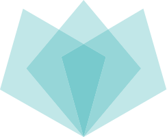
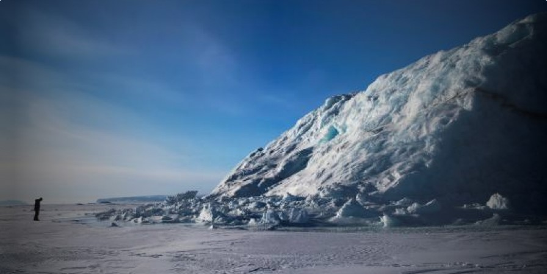

<!DOCTYPE html>
<html><!DOCTYPE html>
  <html lang="es">
    <head>
      <meta charset="UTF-8">
      <meta name="viewport" content="width=device-width, initial-scale=1.0">
      <title>Ecoactualizate</title>
      <link rel="shortcut icon" href="../assets/favicon.ico" type="image/x-icon">
      <link rel="preconnect" href="https://fonts.googleapis.com">
      <link rel="preconnect" href="https://fonts.gstatic.com" crossorigin>
      <link href="https://fonts.googleapis.com/css2?family=Montserrat:wght@200;300;400;500;600;700;800;900&amp;display=swap" rel="stylesheet">
      <meta http-equiv="X-UA-Compatible" content="IE=edge">
      <script defer src="../js/index.js" type="module"></script>
      <link rel="stylesheet" href="../css/noticias.css">
    </head>
  </html>
  <body>
    <!-- **************** Navbar **************** -->
        <section class="navbar-light">
              <div class="navbar-container container"><a class="branding" href="../">
                  <h3 class="h3 branding__title">Ecoactualizate</h3></a>
                    <button class="menu-toggler"></button>
                <nav class="nav-menu">
                  <ul>
                    <li><a class="link" href="../">Inicio</a></li>
                    <li><a class="link link--active" href="../actualizate/actualizate.html">Actualizate</a></li>
                    <li><a class="link" href="../noticias/noticias.html">Noticias</a></li>
                    <li><a class="link" href="../nosotros/nosotros.html">Nosotros</a></li>
                  </ul>
                  <div class="nav-menu__button"> <a class="btn btn-primary btn-md" href="../contribuir/contribuir.html">Contribuir</a></div>
                </nav>
              </div>
        </section>
    <!-- **************** Fin Navbar **************** -->
    <!-- ***************************** MAIN *****************************-->
    <main>
          <section class="noticia noticia--noticia">
                <div class="noticia-container container">
                  <div class="noticia__image"></div>
                  <div class="noticia-metadata noticia-metadata--noticia">
                    <div class="noticia-metadata__categoria noticia-metadata--noticia__categoria">
                      <p class="caption regular">Categoría</p>
                      <p class="body bold">Cambio climático y Medio Ambiente</p>
                    </div>
                    <div class="noticia-metadata__fecha-publicacion noticia-metadata--noticia__fecha-publicacion">
                      <p class="caption regular">Fecha publicación</p>
                      <p class="body bold">02 Ago 2021</p>
                    </div>
                    <div class="noticia-metadata--noticia__url" href="https://www.elcolombiano.com/medio-ambiente/capa-de-hielo-se-derritio-en-groenlandia-OF15320529">
                      <p class="caption regular">Fuente</p><a class="body bold" href="https://www.elcolombiano.com/medio-ambiente/capa-de-hielo-se-derritio-en-groenlandia-OF15320529">https://www.elcolombiano.com/medio-ambiente/capa-de-hielo-se-derritio-en-groenlandia-OF15320529</a>
                    </div>
                  </div>
                  <div class="noticia__content">
                    <h3 class="h3 semi-bold">Gran capa de hielo se derritió en una semana en Groenlandia</h3>
                    <p class="body regular">
            Una ola de calor en Groenlandia, con temperaturas más de diez grados por encima de las normales estacionales, ha provocado esta semana un episodio de derretimiento “masivo” del casquete de hielo de Groenlandia, advirtieron los glaciólogos.
            El casquete glaciar que cubre el vasto territorio ártico se ha derretido unos 8.000 millones de toneladas cada día, el doble del ritmo medio durante el período estival, según datos de Polar Portal, una herramienta de modelización gestionada por institutos de investigación daneses.
            En el pequeño aeropuerto de Nerlerit Inaat, en el noreste de Groenlandia, el mercurio alcanzó los 23,4 grados centígrados el jueves, el nivel más alto desde que la estación meteorológica comenzó los registros y superior a la temperatura máxima registrada en Dinamarca ese día.
            Esta ola de calor, que también ha afectado a gran parte del inmenso territorio ártico, ha acelerado el ritmo de derretimiento del casquete de hielo.
            A modo de comparación, el inmenso volumen de agua fundida a diario en los últimos días -8 billones de litros de agua dulce- “bastaría para cubrir con cinco centímetros de agua toda la superficie de Florida”, subraya Polar Portal.
            El récord de deshielo diario en Groenlandia, que data del verano de 2019, no se ha batido, pero la parte del territorio donde el hielo se derritió es mayor que hace dos años, precisó el sitio de vigilancia ártico.
            Segundo casquete de hielo después de la Antártida, con una superficie de casi 1,8 millones de kilómetros cuadrados, la capa de hielo que cubre Groenlandia preocupa a los científicos porque el calentamiento en el Ártico va tres veces más rápido que en el resto del mundo.
            Su retroceso, iniciado hace varias décadas, se acelera desde 1990.
            Según un estudio europeo publicado en enero, el derretimiento de la capa de hielo de Groenlandia contribuirá a la subida general del nivel del mar en 10 a 18 centímetros de aquí a 2100, es decir 60% más rápido que la estimación anterior. El casquete de hielo de Groenlandia contiene lo suficiente para hacer subir los océanos de 6 a 7 metros.
            Debido a un comienzo relativamente fresco del verano con nevadas y lluvias, el retroceso de la capa de hielo en 2021 todavía está en la media histórica, según Polar Portal. El período de deshielo se extiende desde junio hasta principios de septiembre.
            </p>
                  </div>
                  <div class="noticia-btns"><a class="noticia-btns__right btn btn-lg btn-secondary" href="../noticias/noticia2.html">
                      <p class="body bold">Ir a la siguiente</p></a></div>
                </div><a class="noticia__back-btn" href="../noticias/noticias.html"></a>
          </section>
    </main>
    <!-- ***************************** FIN MAIN ***************************** -->
    <!-- ***************************** FOOTER *****************************-->
    <footer>
            <section class="footer">
              <div class="footer-container container">
                <div class="footer-social">
                  <h3 class="h3 h3-upper extrabold">EL FUTURO NO ES DESECHABLE</h3>
                  <div class="footer-social__container"><a href="https://api.whatsapp.com/send?phone=3002047922"></a><a href="mailto:sofiatobon2020@gmail.com"></a></div>
                </div>
                <div class="footer-branding"><a class="footer-branding__container" href="#">
                    <p class="body bold">Ecoactualizate</p></a><a class="btn btn-primary btn-sm" href="../contribuir/contribuir.html">Contribuir</a></div>
              </div>
            </section>
    </footer>
    <!-- ***************************** FIN FOOTER ***************************** -->
  </body>
</html>